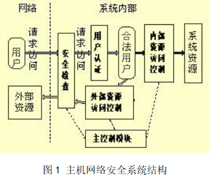

| 个人简介 | 论文 | 长文档 | 透视表 | PPT1 | PPT2 |
1
论文（设计） 题 目 | 主机网络安全及其构建研究 | |||||
选题时间 | 2012.12.5 | 完成时间 | 2014.5.10 | 论文（设计） 字数 | 7600 | |
关键词 | 主机安全；网络安全；主机网络安全；基于角色的访问控制 | |||||
论文（设计）题目的来源、理论和实践意义： 主机网络安全是计算机安全领域新兴的边缘技术，它综合考虑网络特性和操作系统特性，对网络环境下的主机进行更为完善的保护， 信息技术的发展伴随着安全问题的产生,长期以来安全技术防范的目标都是外部闯入者，而忽视了内部人员的非法操作和主机（服务器）本身的安全。 计算机网络的发展使计算机应用更加广泛和深入，但随之也使安全问题日益突出和复杂。从理论上讲，人们从两个方面考虑计算机安全问题：主机安全和网络安全。主机安全主要是考虑保护合法用户对于授权资源的使用，防止非法入侵者对于系统资源的侵占与破坏。网络安全主要考虑的是网络上主机之间的访问控制，防止来自外部网络的入侵，保护数据在网上传输时不被泄密和修改。本文提出一种主机安全的模型框架，力图同时防范来自内、外部的攻击，全面增强主机安全。 | ||||||
论文（设计）的主要内容及创新点： 本文主要从主机网络安全的基本概念和系统结构，讨论了主机网络安全的两种主要技术手段：一种是基于分组过滤技术(Packet filtering)，它的代表是在筛选路由器上实现的防火墙功能；一种是基于代理技术(Proxy)，它的代表是在应用层网关上实现的防火墙功能。 本文的创新有三点（或主要有三个方面），首先分析了主机网络安全…省略了许多文字省略了许多文字省略了许多文字……，对比了……，其次是省略了许多文字省略了许多文字省略了许多文字省略了许多文字省略了许多文字省略了许多文字省略了许多文字省略了许多文字，最后给出了构建主机网络安全的一种方案，该方案具有…………特点，能够满足…………。 | ||||||
附：论文（设计） | 本人签名： 年 月 日 | |||||
目录
主机网络安全及其构建研究
王祺慧
（山东师范大学信息科学与工程学院计算机系2014级计信1班）
摘要：主机网络安全是计算机安全领域新兴的边缘技术，它综合考虑网络特性和操作系统特性，对网络环境下的主机进行更为完善的保护。本文对主机网络安全作一简单定义，提出了主机网络安全体系结构，并对其中的关键技术和安全特性进行探讨，在此基础上给出了一种主机安全的模型框架，力图同时防范来自内、外部的攻击，全面增强主机安全。
关键词：主机安全；网络安全；主机网络安全；基于角色的访问控制
中图分类号：TP393
Research on Host-Network Security and Construction
Wang qi-hui
(School of Information Science and Engineering, Shandong Normal University)
Abstract: Host-network security is a rising marginal technology in the field of computer security. It provides more secure protection for hosts in network environment on the basis of consideration of the network attributes and OS attributes together. In this paper, it tries to give a simple definition of host-network security and describes the architecture of the host-network security system, and then some key technologies of host-network security is discussed. Finally, The paper presents a model of host security trying to check attacks from both outsiders and insiders and to increase host security in every aspects.
Key words: Host-Network Security; Host Security; Network Security; Role-Based Access Control
计算机网络的发展使计算机应用更加广泛和深入，但随之也使安全问题日益突出和复杂。从理论上讲，一旦主机连接到网络上，它就面临来自网络上的安全威胁，这些威胁主要有：非授权访问、冒充合法用户、破坏数据完整性、干扰系统正常运行、特洛伊木马、线路窃听等。为了有效防御和抑制这些威胁，现在最常用的技术手段有：身份验证、访问控制、加密、防火墙、记账审计等。通常情况下，从两个方面考虑计算机安全问题：主机安全和网络安全。主机安全主要是考虑保护合法用户对于授权资源的使用，防止非法入侵者对于系统资源的侵占与破坏。其最常用的办法是利用操作系统的功能，如Unix的用户认证、文件访问权限控制、记账审计等。网络安全主要考虑的是网络上主机之间的访问控制，防止来自外部网络的入侵，保护数据在网上传输时不被泄密和修改。其最常用的方法是防火墙、加密等。由于两者考虑问题的立脚点不同，它们各自采用的技术手段难以有机地结合起来，因此对于一些需要两者协同处理才能解决的问题[1]，否则，就不能得到有效的解决。例如，用户希望在内部子网远程登录主机时具有较大权限，但在子网以外远程登录主机时只具有普通权限，就是一个典型的例子。
目前而言，对主机的安全保护主要依赖于防火墙、IDS(闯入发现系统)和操作系统本身固有的安全特性。但是防火墙的最大缺点就是它的防外不防内的特点，而服务器经常是对外提供服务，这样实际上防火墙并不能从根本上解决主机安全问题。IDS是一种被动的防御措施，它并不能阻止任何非法行为。操作系统虽然提供了一些安全措施，但是其功能非常有限，并且经常存在各种漏洞，这只有经验丰富的系统管理员才能保证操作系统的安全。因此，如何保证主机安全，同时防止内、外非法用户的攻击就成为当前信息系统建设中一个至关重要的问题。本文提出的主机网络安全技术就是要解决类似的安全问题，本文提出一种主机安全的模型框架，力图同时防范来自内、外部的攻击，全面增强主机安全，可以根据网络访问的访问者及访问发生的时间、地点和行为来决定是否允许访问继续进行，实现对于同一用户在不同的场所拥有不同的权限，从而保证合法用户的权限不被非法侵占。
由于主机安全和网络安全的技术手段难以有机地结合，因此容易被入侵者各个击破。并且，由于它们在保护计算机和信息的安全上各自为政，因此很难解决系统安全性和使用方便性之间的矛盾。举一个简单的例子，从严密保护主机安全来说应该禁止用户的远程登录，但是这给用户的使用将带来极大的不便，对Internet上绝大多数Unix主机来说是不可以接受的。而一旦允许用户远程登录，却无法区分用户的远程登录是合法的还是非法的，也就控制不了非法用户的入侵，并且系统一旦被入侵，入侵者就拥有该用户的全部权力，危害极大。对于防火墙系统来说也有同样的问题，防火墙可以禁止外部主机对于内部主机的访问（安全而不方便），但是一旦允许用户经防火墙授权验证后进入内部主机，就无法控制其在内部主机上的行为（方便就不安全了）。
为了解决这些问题，一种结合主机安全和网络安全的边缘安全技术开始兴起，这就是主机网络安全技术。主机网络安全技术考虑的元素有IP地址、端口号、协议、甚至MAC地址等网络特性和用户、资源权限以及访问时间等操作系统特性，并通过对这些特性的综合考虑，来达到用户网络访问的细粒度控制。
与网络安全采用防火墙、安全路由器等在被保护主机之外的技术手段不同，主机网络安全所采用技术手段通常在被保护的主机内实现，并且一般为软件形式。因为只有在被保护主机之上运行的软件，才能同时获得外部访问的网络特性以及所访问资源的操作系统特性。在当前广泛使用的计算机安全产品中，已经有一些软件在主机网络安全技术方面作了一些探索。
这类产品中，应用最为广泛的当属Wietse Venema开发的共享软件TCP Wrapper。TCP Wrapper是一种对进入的网络服务请求的监视与过滤工具，它可以截获SYSTAT、FINGER、FTP、TELNET、RLOGIN、RSH、EXEC、TFTP、TALK等网络服务请求，并根据系统管理员设置的服务访问策略来禁止或允许服务请求。一般情况下，其策略主要考虑的是外部主机的域名／IP地址和请求的服务类型。通过扩充，还可以将请求访问的用户名和访问时间包括进来。即可以制定“在某时间允许／禁止某用户从外部某主机对某服务的访问”这样的策略。
另外，现在一些操作系统厂商已经或即将在操作系统中提供主机网络安全产品，如IBM公司在AIX 4.3.1中的引入了强制访问控制、控制访问的多级目录管理、并可内置Check Point公司的Firewall-1/VPN-1 4.0；SUN公司即将发布的Solaris中也将引入公共密钥结构(PKI)、基于IP Security的虚拟私有网络(VPN)和内置的防火墙。这些措施都将极大地改善主机的网络安全状况，不过它们都是侧重于从访问的网络特性方面考虑，对于访问的操作系统属性考虑不够，因此对于冒充合法用户之类的攻击缺乏有效的办法[2]。
主机网络安全体系涉及到诸多技术，这里对它们作一简单介绍。
入侵检测是主机网络安全的一个重要组成部分。它可以实现复杂的信息系统安全管理，从目标信息系统和网络资源中采集信息，分析来自网络外部和内部的入侵信号，实时地对攻击做出反应。
入侵检测系统通常分为基于主机和基于网络两类。基于主机入侵检测的主要特征是使用主机传感器监控本系统的信息。这种技术可以用于分布式、加密、交换的环境中监控，把特定的问题同特定的用户联系起来，但加大了系统的负担。基于网络的入侵检测主要特征是网络监控传感器监控包监听器收集的信息，它不能审查加密数据流的内容，对高速网络不是特别有效。
在主机网络安全体系结构中，采用基于主机的入侵检测技术实现对主机的保护。它能够实时监视可疑的连接，检查系统日志，监视非法访问和典型应用。它还可针对不同操作系统的特点判断应用层的入侵事件，对系统属性、文件属性、敏感数据、攻击进程结果进行监控。它能够精确地判断入侵事件，并对入侵事件迅速做出反应，结合主机上的包过滤功能模块切断来自可疑地址的网络连接。
访问控制主要有两种类型：网络访问控制和系统访问控制。网络访问控制限制外部对主机网络服务的访问和系统内部用户对外部的访问，通常由防火墙实现。系统访问控制为不同用户赋予不同的主机资源访问权限，操作系统提供一定的功能实现系统访问控制，如UNIX的文件系统。通常情况下这两种访问控制相互独立，因此无法将两者各自的特性结合起来进行控制。例如在利用防火墙实现网络访问控制时无法加入用户属性，在利用UNIX文件系统功能进行文件访问控制时无法加入网络属性。
在主机网络安全中，将网络访问控制和系统访问控制的特性结合起来，实现严格的、细粒度的访问控制。网络访问控制的属性有：源IP地址、源端口、目的IP地址、目的端口等。系统访问控制（以文件系统为例）的属性有：用户、组、资源（文件）、权限等。通过在主机的操作系统中添加防火墙模块，同时实现对于系统调用的监控以监视用户行为，这样可以将网络属性和操作系统属性结合起来，再加上时间属性（起始、终止时间），制定相应的安全规则，就能够实现强大的访问控制。
通常将安全规则分为两类：系统安全规则和用户安全规则。系统安全规则是全局规则，作用范围为整个系统，由系统管理员制定和维护。用户安全规则为局部规则，由每个用户自己制定并维护，它的作用是限制用户自己的行为和与自己有关的资源的使用，可针对不同操作系统的特点判断应用层的入侵事件，对系统属性、文件属性、敏感数据、攻击进程结果进行监控。。引入用户安全规则的目在于在系统大安全环境下由用户定制自己的局部安全环境，减少入侵者冒用自己的账号、破坏系统资源的机会，也可在一定程度上防止自己的误操作。
系统安全规则具有高优先级。在两种规则发生冲突的时候，冲突部分的处理以系统安全规则为准。因此从系统全局的角度来看，用户自己制订的安全规则只会使系统的访问控制更严格。
加密就是为了安全目的对信息进行编码和解码。数据加密的基本过程就是将可读信息（明文）译成密文（或密码）的代码形式。加密的逆过程即为解密。加密传输技术是一种十分有效的网络安全技术，它能够防止重要信息在网络上被拦截和窃取。
IPsec(IP安全体系结构)技术在IP层实现加密和认证，实现了数据传输的完整性和机密性，可为IP及其上层协议(TCP和UDP等)提供安全保护。
虚拟专用网(VPN)技术能够在公共网络中为两台通信的计算机建立一个逻辑上的安全的通道(tunnel)，通过数据的加密和认证使得数据包即使被截获也不容易破译，提供了很好的安全性。IPsec的提出使得VPN有了更好的解决方案。由于IPsec在网络层进行安全服务，所以大大减少了密钥协商的开销，而且需要改动的应用程序也要少得多。
认证（Authentication）是确定某人或某事是否名副其实或有效的过程。认证的基本思想是通过验证称谓者的一个或多个参数的真实性与有效性，以达到认证的目的。认证的主要目的为信源识别与信息完整性验证。安全可行的认证系统常建立在密码学的基础上。用户身份认证可以识别合法用户和非法用户，从而阻止非法用户访问系统。用户身份认证是保护主机系统的一道重要防线，它的失败可能导致整个系统的失败。
Kerberos是由MIT提出的基于可信赖的第三方（即Kerberos认证服务器）的认证系统，采用对称密钥体制（私钥制）对信息进行加密[3]。X.509是ITU提出的一个基于非对称密钥体制（公钥制）的认证框架，也是依赖于共同信赖的第三方——CA（Certificate Authority）来实现认证，实现上更加简单明了。
主机安全系统应实现下列目标：
（1）把整个系统的用户根据需要分为不同级别；不同级别的用户享有对系统的文件、数据、网络、进程等资源的权限，并进行记费管理；还可根据不同的用户设置不同的安全策略，将超级用户的权限细化（可分为系统管理员、安全管理员、数据库管理员、用户管理员等）。
（2）所有用户的登录都要进行认证，并且用户和主机之间的关键信息的传输，都采取加密的方式进行传输。
（3）对访问系统的数据包进行分析，整个系统应能识别合法数据包和非法数据包；并可设置合法及非法地址的访问；建设攻击特征库，力图实现智能化，争取实现自学习能力，不断增强识别包内容的能力。
（4）应能克服操作系统本身存在的漏洞，防止TROJAN 和系统的后门，不断发现新的漏洞并进行补救。
（5）能对系统用户的行为进行跟踪，确保其对自己的行为负责，预测并阻止其非法行为对系统造成的损害。
主机安全系统的设计按下列原则进行详细的描述：
（1）不修改系统内核程序；
（2）系统的安装和拆卸不停机；
（3）用户的进入不需要繁琐的输入；
（4）是一种预防和保卫系统，但不影响访问信息和资源的方便性。
下面对整个系统结构进行详细描述：
安全管理员主要有两个工作界面，一个就是整个系统的安全策略管理（相当于一个防火墙，对来访或出去的数据的协议，端口，来源等做限制）；另外一个就是对系统的用户的管理界面（包括用户级别的管理、权利管理。在实现上有两个模块：对主机上资源的访问控制和对网络资源的访问控制）。
安全特征数据库是系统的一个关键部件，系统具有一个安全数据库，不断的补充新发现的网络安全漏洞，攻击手段和系统漏洞。

如图1所示，系统包含用户认证、安全检查、用户访问控制（包括外部资源访问控制、内部资源访问控制）等部件，各模块主要功能如下：
用户认证是对访问系统的用户进行比现有的操作系统所提供的口令认证更高安全性的认证。
安全检查中包括对外部进来的可疑信息的检查、对系统漏洞的补救、发现并防止攻击。它还执行一部分防火墙的执能，对系统与网络之间的数据报交换进行相应控制（可以根据IP和端口号）。
用户访问控制对系统的用户权限进行更加详细的划分，并对用户的行为进行跟踪、非法行为的发现和控制。它主要包括两个模块：内部资源访问和外部资源访问控制。
内部资源访问控制：主要是对内部合法用户的权限进行限制，规范用户的行为。包括对用户的权限进行详细的分类控制，跟踪（这一部分是执行传统的IDS）并阻止非法行为，防止用户利用系统存在的安全漏洞所进行的攻击。
外部资源访问控制：对用户访问系统之外信息资源（网络上其他资源）的控制，并进行计费管理。
主控制模块是对安全检查的策略和用户的访问控制进行设置，同时也可以提供WWW服务，便于远程安全管理员进行设置。
访问控制模块可以与安全检查模块进行通信，以便能同时从用户和IP的角度对进/出系统的数据包进行控制，更好的实现系统安全。
系统的访问控制模块就其所控制的用户要访问资源的位置来看,可分为内部资源访问控制和外部资源访问控制。就其所实现的功能来看可分为[4]：闯入发现并阻止模块和用户资源访问控制模块两部分。
在系统发挥作用后，用户的命令或系统调用的执行过程如图2所示。
典型的UNIX系统对用户的控制是通过用户组进行管理的，而用户的所有权是根据文件或目录的属性来确定的。这样如果要确定具体用户的权限，对用户进行有效的管理需要对整个文件系统进行全面的审查。
为了从整体上增强系统的安全，在用户资源访问控制模块中采用了基于角色基础上的访问控制技术。基于角色的访问控制是这样的：系统管理员根据部门内部的实际需要建立角色，并赋予角色一定的权利，然后再将用户赋予一定的角色。角色不但定义了用户可访问资源的权限而且也定义了权限的大小。在这种情况下，用户所享有的权利是可以变化的，而角色所享有的权利是相对稳定的。这种划分可以使系统用户权限的划分粒度更加精细，从而增加系统安全。
在进行角色的划分时采用以下两个原则；
（1）最小权利原则：只有用户真正需要的权利才被允许。
（2）分离权利和责任。
用户和角色：用户主要是指人；角色是指在一个组织内部的职位并被赋予一定的权利和义务。角色和组的根本区别在于：组是用户的集合而不是权利的集合；角色作为中介，既是用户又是权利的集合体。
权利：是指服务对一定的对象访问，执行，读写等权利。均是与在系统内执行一定的行为相关连的。对象包括数据对象和资源对象。权利包含有：从访问一个特定的子网到访问某一个文件，或使用内存或磁盘的情况、目录、设备等等。
图3中指明了用户分配和授权情况，均可以是多对多的关系。
会话：当激活一个或多个角色时，用户可以建立会话。每个会话可以将用户分配到多个角色上。每个会话只能属于一个用户。但是，每个用户同时可以激活多个会话。这种分配体现了最小分配原则[5]。如果一个用户属于多个角色，他在一个会话中只使用必要的角色权限。
闯入发现系统最初是通过对系统审计或日志记录的结果分析确定用户是否有非法行为来增强系统安全。系统可以把现有的安全系统技术与专家系统技术相结合，及时、迅速、准确的发现用户的行为。这种系统只有达到实时工作状态才能起到作用，但是目前还很难达到这种要求。
闯入发现并阻止模块在对用户的命令或系统调用等进行访问控制并确定用户是否有非法行为后，再嵌入阻止模块，更能很好的达到安全效果。
对主机安全造成威胁的用户有以下几类[6]：
（1）外部的闯入者
（2）内部的闯入者：A.内部人员的伪装者（借用另外一个人的用户名和口令）；B.内部人员的偷猎者（使用一定的方法避过审计和访问控制手段）
（3）授权用户滥用权利
针对上述不同的用户可以采取不同的对策：
对（1）类用户可以根据检查其失败的登录的次数来进行控制。
对（2）类内部的用户可以采用类似的方法，根据其试图访问未授权文件及应用程序来判定其为非法。对内部的闯入者中的A类用户可以根据其用户行为是否与其正常行为偏离来判断。对B类用户一般会采用以下两类模式：使用系统特权和在较低的级别上运行。前一种可以观察谁对审计程序进行过操作来进行判断，后一种可以在较低的级别上运行审计程序，例如系统服务或系统调用。
对（3）类用户可以根据其行为是否符合有特点的闯入行为相似，并与其典型的用户行为来对照进行判断。
闯入发现并阻止模块系统结构如图4所示，对预处理的结果进行分析处理，分析或处理的根据是规则集合和模型集合。
系统所要观察的对象包括：用户、用户组、远程用户和远程主机。
监视用户组的行为可以了解用户偏离用户组的程度。监视远程主机的行为可以判断例如一个用户以各种不同用户名试图登录的情形。
发现非法用户的行为的方法可分为两类[7]：建立在模型基础上的和建立在规则基础上的。
（1）建立在模型基础上的规则
这种只记录合法用户的行为。如果用户的行为与所记录的合法用户的行为不一致，系统就认为其为非法。根据用户的正常行为判断其是否为合法，有分离的和连续的两种方法[8-9]。前一种是根据最近的几个命令来判断，而后一种是根据这次用户的会话和以前的会话相对比来判断其合理性。
（2）建立在规则基础上的规则
这种是只记录非法用户的行为和系统的漏洞信息，一旦有用户的行为与其相符系统就认为其为非法。某些合法用户的行为可能与平时的行为不符，还有某些用户滥用权利的行为也不能使用上一种方法来进行。所以建立在过去的闯入发现事件、已知的系统弱点和系统设置的安全策略基础上的IDS会拟补（1）方法的不足[10]。
这两种规则都存放在一张表中，表中包含每个独立的行为和以前行为的值及根据这两种记录的组合所应采取的控制策略。并且表中的内容是根据知识使用频繁程度和日常用户行为不断进行顺序调整和更新。因此，将这两种规则结合起来对用户的行为进行分析处理并与访问控制模块、安全检查模块功能进行密切配合，就能够很好的达到系统安全的目的。
主机网络安全技术是一门新兴的计算机网络安全边缘技术，本文虽然做了一些有益的探索工作，却是远远不够的，它的理论尚未成熟，其功能、需求、体系结构、实现技术都有待进一步的研究。随着网络应用的不断深入，主机网络安全技术在计算机安全中的重要性将会越来越明显，主机网络安全系统的用户需求也将越来越迫切，因此，它必须引起人们的重视，并更加深入地研究。
参考文献：
[1]李冉,刘东波,张维明.基于模式映射的查询生成算法[J].计算机科学,2006,33(3):125-128.
[2]韩燕波,王洪翠,王建武,等.一种支持最终用户探索式组合服务的方法[J].计算机研究与发展, 2006,43(11):1895-1903.
[3]解洪胜，张虹.基于支持向量机的图像检索主动学习方法[J].山东师范大学学报（自然科学版）,2007,22(4):46-48.
[4]萨师煊,王珊.数据库系统概述（第四版）[M].北京:高等教育出版社,2006.
[5]黄刚,王汝传.基于XACML的网格访问控制研究[J].计算机系统应用,2007(8):48-51.
[6]姚国新．基于Ajax的Web应用技术的研究与实现[D].西北大学硕士论文,2006.
[7]邵维忠,杨芙清.面向对象的系统分析[M].北京:清华大学出版社,1998.
[8](美)Mandy Andress.计算机安全原理[M].杨涛,李明,译.北京:机械工业出版社,2001.
[9]朱涛江.系统安全的最小特权原则[EB/OL].http://www.ibm.com/developerworks/cn/ security/se-limited/safe.htm.
[10]王继梅,金连甫.Web服务安全策略研究与应用[J].计算机应用与软件,2006,21(2):91-93.